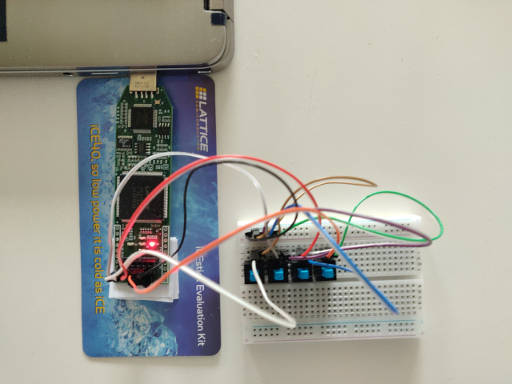
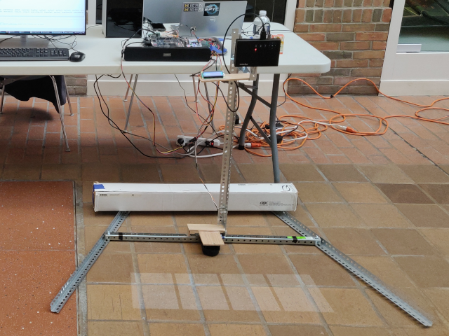
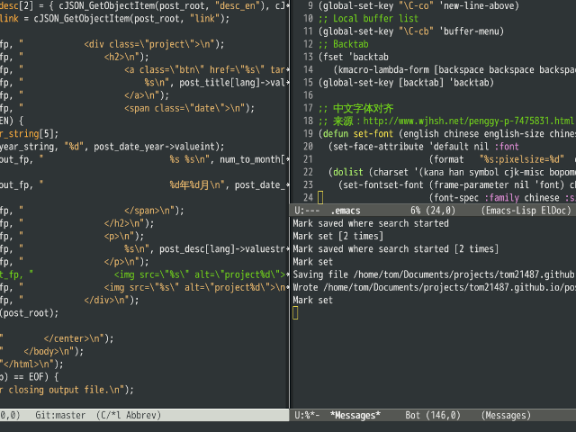
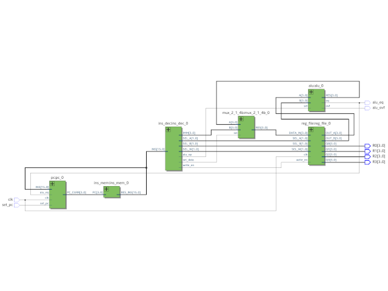
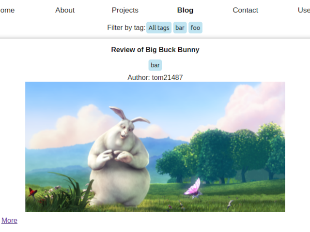

Tom Jiao - tom21487.github.io
En | 中
欢迎来到我的个人网站。我是密歇根大学工程学院的一名本科生。我主修计算机科学，辅修电气工程。
兴趣方向：计算机体系结构、电路与程序的结合、Linux系统和文本编辑器
电子邮箱：tomjiao@umich.edu
以下是我的一些个人项目。
基于FPGA的软核处理器 2022年12月
我完成了德捷电子的FPGA入门课程，将FemtoRV处理器在我的Lattice IceStick FPGA开发板上实现。
投影仪钢琴 2022年12月
我与团队在密大EECS373课程中的期末项目。这是一个包含投影仪的电子乐器。它可以将钢琴按键投射到任何平面上。触碰虚拟按键则会出声。该项目中的两大模块为激光扫描仪和VGA显示控制器。我们用到的技术包括：串联通信协议（UART、I2C）、C语言编成、FPGA数字电路设计（Verilog）和焊接等。
Emacs配置文件 2022年11月
想和大家分享一下我的emacs配置。很多人经常问我：“你为什么会用如此古老的编辑器？多不方便啊。“其实我也没有一个完整的答案，也许是因为习惯，也许是为了情怀。用完emacs之后我才真正了解什么叫做自由软件－把所有的选择留给用户。
门级处理器内核 2022年9月
仅使用电线和逻辑门设计的4位处理器核心。
博客创建工具 2022年8月
一个创建网络博客的平台。
